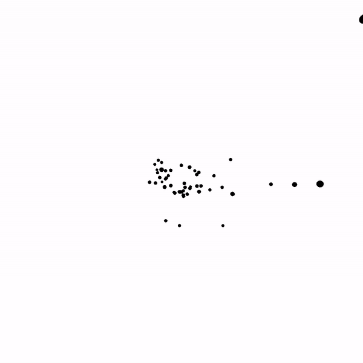
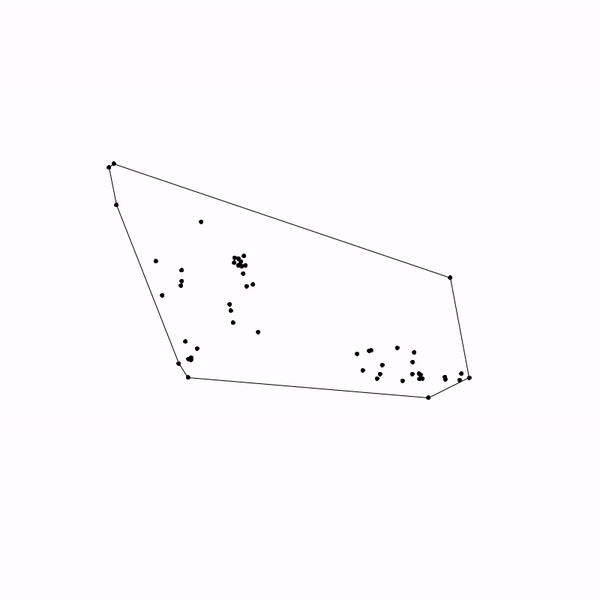
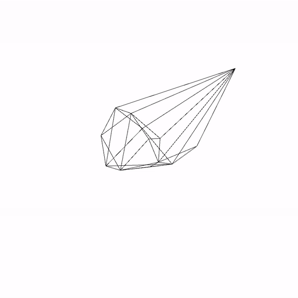
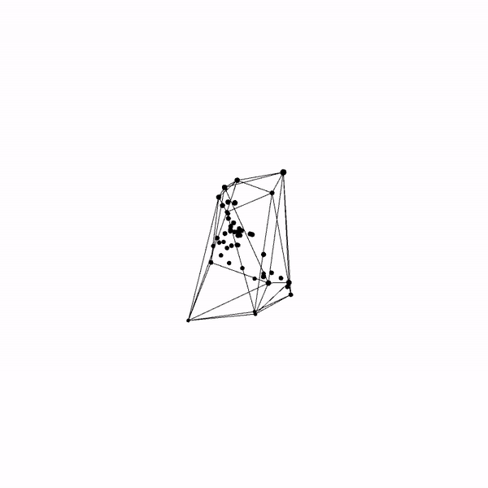

Convex Hulls in 2D and 3D
Generated unique and constantly changing convex hulls via a randomized, chaotic n-body problem. For both dimensions, a O(n^2) brute algorithm for calculating gravitational forces. Possible optimization could be done by reducing it to O(nlogn) via the barnes-hut algorithm but it really is not worth the space/time spent when the number of bodies is less than 1000 or so.

For the 2 dimensional n body simulation, finding the convex hull was pretty simple, using the Jarvis March algorithm. Starting from the left most point, we scan every other point until we find the right most point relative to the current point. We then move onto that point and repeat until we get back to the start point. Jarvis March runs in O(nh) time where n is the number of points and h is the number of edges in the hull. There exists a possible O(nlogn) optimization using Graham scan as well as a O(nlogh) optimization using Chan's algorithm

Things get a little bit more complicated in three dimensions. For the most simple implementation, simply move through every triplet pair of points (a face) and decide if every other point is on one side of the face. If so, it belongs to the convex set. This is done by finding the orthogonal vector and using cross and dot products to see if the above condition is true. This naive algorithm runs in O(n^4) time. Although it can be optimized, it is very simple and is acceptable when N is a (relatively) low number. Possible optimizations include using Jarvis March in three dimensions which would be O(nF) where F is the number of faces, a divide and conquer (difficult) algorithm that would run in O(nlogn) time as well as an incremental algorithm that would take O(n^2).

